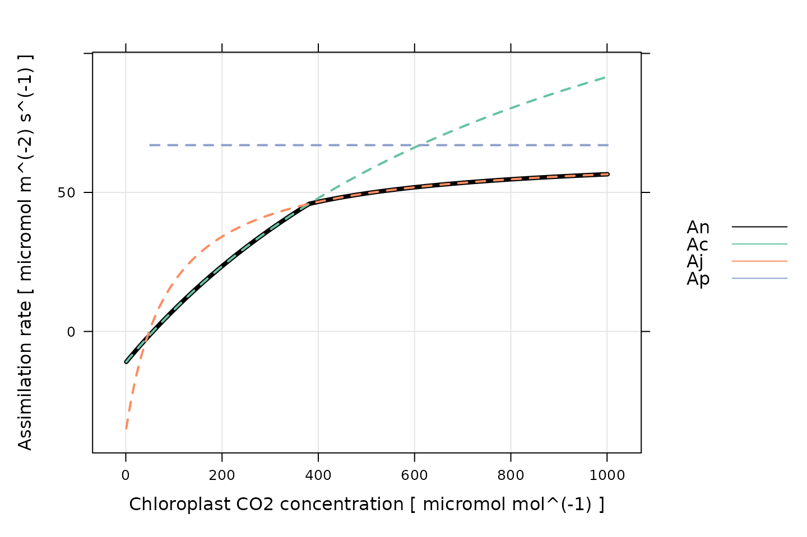
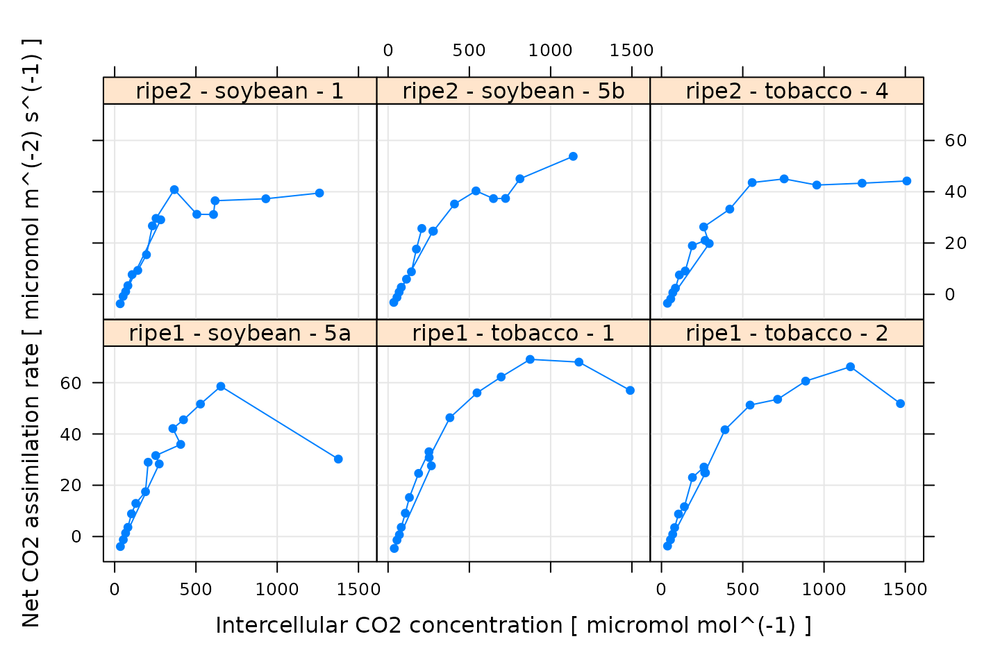
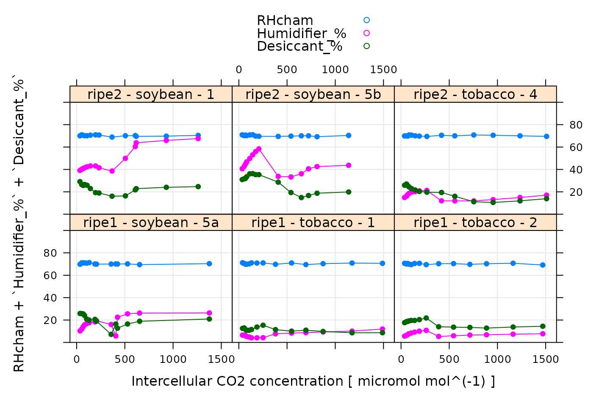
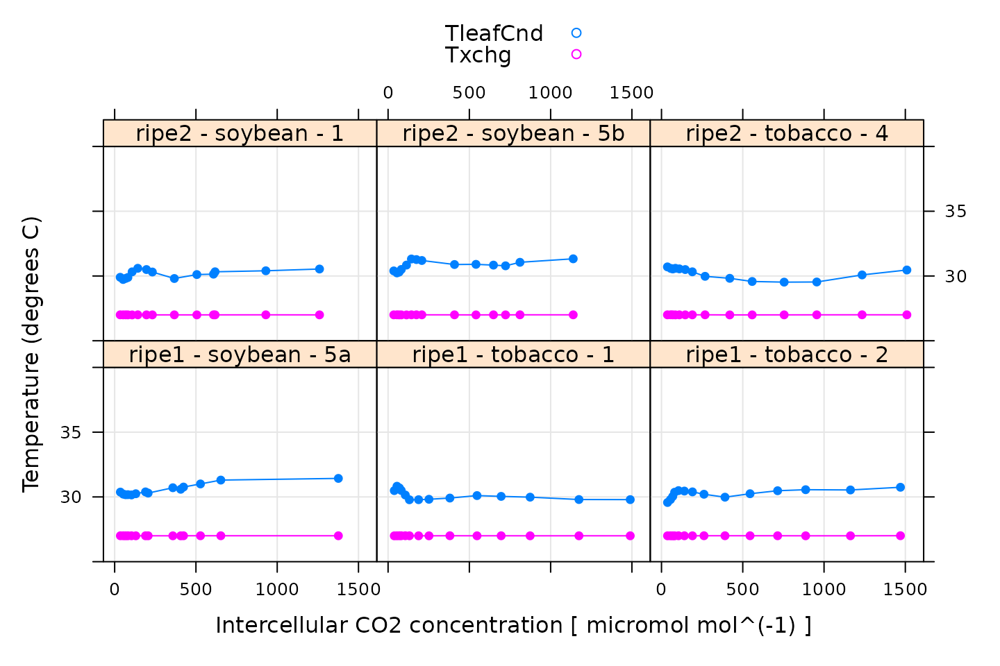
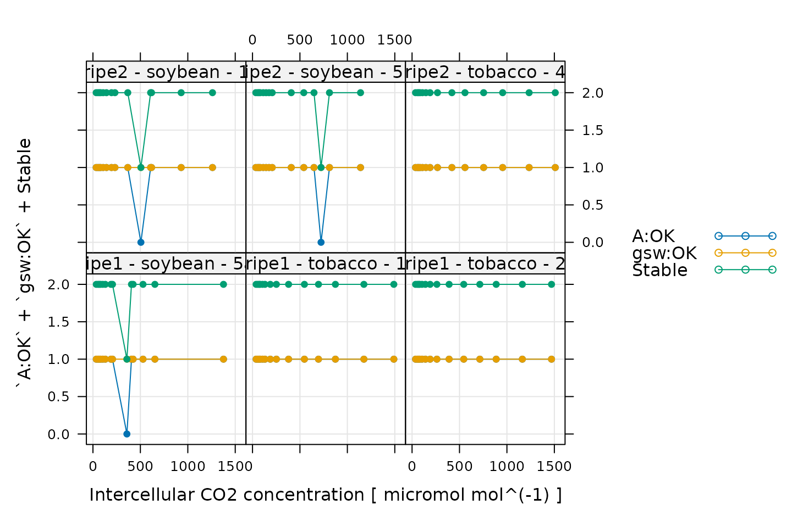
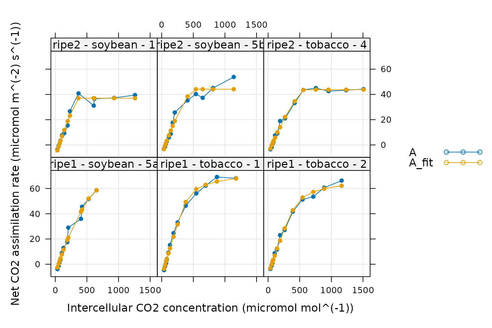
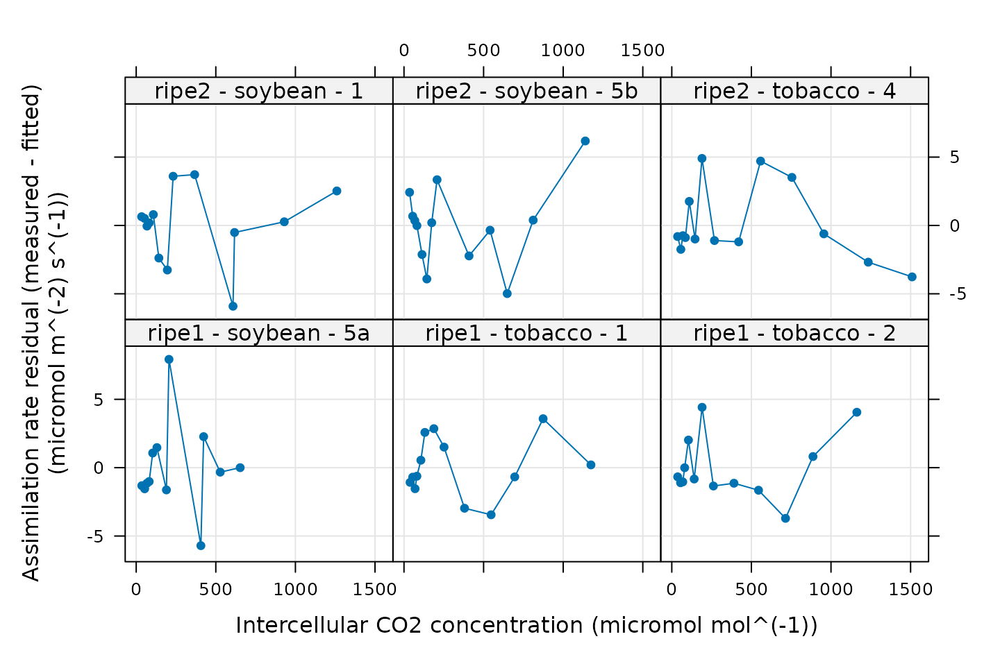
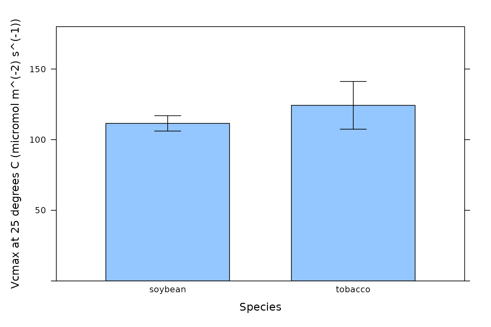
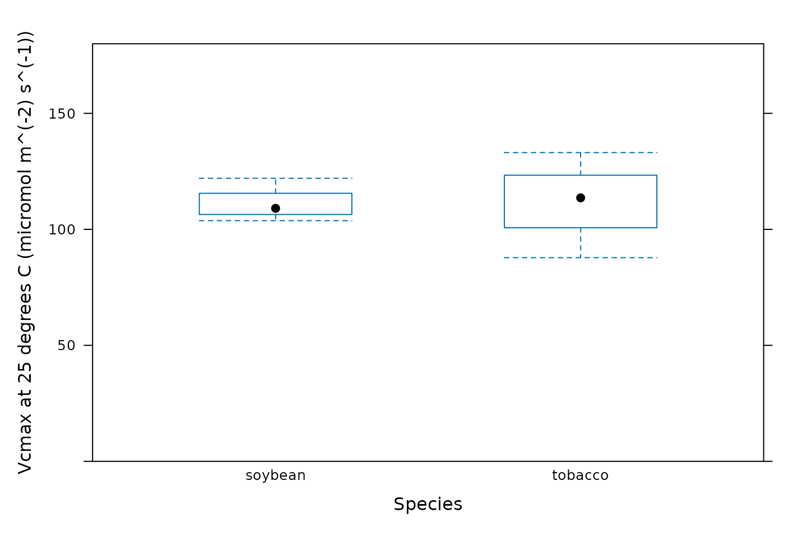

Overview
In this vignette, we will give an example showing how to analyze
C3A-Ci data using the
PhotoGEA package. The commands in this vignette can be used
to initialize your own script, as described in Customizing Your Script.
Background
Understanding C3A-Ci Curves
An A-Ci curve (or CO2 response curve) is a particular type of gas exchange measurement where a living leaf is exposed to varying concentrations of CO2. For each CO2 concentration in the sequence, the net assimilation rate (), stomatal conductance to H2O (), intercellular CO2 concentration (), and other important quantities are measured and recorded. Typically, other environmental variables such as temperature, humidity, and incident photosynthetically-active photon flux density (PPFD) are held constant during the measurement sequence so that changes in assimilation rates can be attributed to CO2 alone.
Because of their different cell structures and biochemical pathways, C3 and C4 plants have very different responses to CO2. Here, we will only be discussing C3 plants.
The full C3 photosynthetic pathway is quite complicated, consisting of at least two hundred individual reactions, each of which may have an impact on a measured A-Ci curve. However, simplified models for net CO2 assimilation are available and are much easier to understand and work with. These models tend to be based around Rubisco kinetics, describing how the net assimilation rate responds to the amount of CO2 available in the chloroplast. The most widely-used model is typically referred to as the Farquhar-von-Caemmerer-Berry model (often shortened to the FvCB model or Farquhar model) after the three scientists who first published it. An excellent description of this model can be found in Biochemical Models of Leaf Photosynthesis (Caemmerer 2000), subject to a few additional considerations discussed in Lochocki and McGrath (2025).
This model provides a framework for understanding the changes in that occur as a C3 leaf is exposed to successively higher concentrations of CO2. Overall, the response to CO2 under high light conditions can be divided into three separate ranges:
At low levels of CO2 in the chloroplast, CO2 assimilation is primarily limited by Rubisco activity; the maximum rate of Rubisco activity is denoted by .
At intermediate levels of CO2 in the chloroplast, CO2 assimilation is primarily limited by the rate of electron transport going to support RuBP regeneration; the potential rate of electron transport at a given incident PPFD is denoted by . (Note: is distinct from the maximum rate of electron transport that could be achieved at any incident PPFD, which is denoted by .)
At high levels of CO2 in the chloroplast, CO2 assimilation is primarily limited by triose phosphate utilization (TPU); the maximum rate of TPU is denoted by .
More specifically, the model provides equations for potential RuBP carboxylation rates (as catalyzed by Rubisco) that are each limited by one of three important processes:
The Rubisco-limited carboxylation rate ().
The RuBP-regeneration-limited carboxylation rate ().
The triose-phosphate-utilization-limited carboxylation rate ().
Each of these rates depend on the CO2 concentration in the chloroplast and other factors such as the incident light intensity. The actual RuBP carboxylation rate () for a particular set of conditions is taken to be the smallest of the three potential rates. Then, the net CO2 assimilation rate can be calculated from by including carbon losses due to photorespiration and non-photorespiratory CO2 release; the rate of non-photorespiratory CO2 release in the light is denoted by . It is also possible to calculate the net assimilation rates corresponding to each potential carboxylation rate: , , and . The plot below illustrates the three different assimilation ranges observed in a typical high-light A-Ci curve, as predicted by the FvCB model.

(Note: This figure was generated using the
calculate_c3_assimilation function from the
PhotoGEA package, and it represents the photosynethetic
response of a C3 leaf according to the FvCB model with
alpha_old = 0.2, J = 170 micromol m^(-2)
s^(-1), RL = 1 micromol m^(-2) s^(-1), Tp =
11.8 , and Vcmax = 100 micromol m^(-2) s^(-1). Temperature
response parameters from Thomas D. Sharkey et al.
(2007) were used for
these calculations.)
Thus, one of the most common reasons to measure an
A-Ci curve is to interpret it in the context of this
model. In other words, by fitting the model’s equations to a measured
curve, it is possible to estimate values for
,
,
,
,
and
.
See the documentation for calculate_c3_assimilation for
more information about these important quantities.
Practicalities
There are a few important practicalities to keep in mind when thinking about CO2 response curves.
One point is that net assimilation models generally predict the response of assimilation to the CO2 concentration in the chloroplast (), but gas exchange measurements can only determine the CO2 concentration in the leaf’s intercellular spaces (). Thus, an extra step is required when interpreting A-Ci curves. If the mesophyll conductance to CO2 diffusion () is known, then it is possible to calculate values of from , , and . Otherwise, it is typical to assume an infinite mesophyll conductance; in this case, , and the estimated values of and other parameters can be considered to be “effective values” describing the plant’s response to intercellular CO2 rather than the true response to chloroplastic CO2.
Another important point is that plants generally do not appreciate being starved of CO2, so it is not usually possible to start a response curve at low CO2 and proceed upwards. A more typical approach is to:
Begin at ambient atmospheric CO2 levels.
Decrease towards a low value.
Return to ambient levels and wait for the plant to reacclimate; this waiting period is usually accomplished by logging several points at ambient CO2 levels.
Increase to higher values.
When taking this approach, it therefore becomes necessary to remove the extra points measured at ambient CO2 levels and to reorder the points according to their CO2 values before plotting or analyzing them.
Note: while this approach is commonly used, some reasearchers advocate for starting either at high or low CO2, and continuously decreasing or increasing the CO2 concentration (Thomas D. Sharkey 2019).
The Data
A-Ci curves are commonly measured using a
portable photosynthesis system such as the Licor Li-6800. These machines
record values of
,
,
,
and many other important quantities. They produce two types of output
files: plain-text and Microsoft Excel. It is often more convenient to
work with the Excel files since the entries can be easily modified (for
example, to remove an extraneous row or add a new column). On the other
hand, it can be more difficult to access the file contents using other
pieces of software such as R. However, the PhotoGEA package
reduces this barrier by including tools for reading Licor Excel files in
R, which will be demonstrated in the following section.
Loading Packages
As always, the first step is to load the packages we will be using.
In addition to PhotoGEA, we will also use the
lattice package for generating plots.
If the lattice package is not installed on your R setup,
you can install it by typing
install.packages('lattice').
Loading Licor Data
The PhotoGEA package includes two files representing
A-Ci curves measured using two Li-6800 instruments.
The data is stored in Microsoft Excel files, and includes curves
measured from two different crop species (tobacco and soybean) and
several different plots of each. Each curve is a sixteen-point
CO2 response curve; in other words, the CO2
concentration in the air surrounding the leaf was varied, and
(among other variables) was measured at each CO2 setpoint.
Although these two files are based on real data, noise was added to it
since it is unpublished.
The files will be stored on your computer somewhere in your R package
installation directory, and full paths to these files can be obtained
with PhotoGEA_example_file_path:
# Define a vector of paths to the files we wish to load; in this case, we are
# loading example files included with the PhotoGEA package
file_paths <- c(
PhotoGEA_example_file_path('c3_aci_1.xlsx'),
PhotoGEA_example_file_path('c3_aci_2.xlsx')
)(Note: When loading your own files for analysis, it
is not advisable to use PhotoGEA_example_file_path as we
have done here. Instead, file paths can be directly written, or files
can be chosen using an interactive window. See Input Files below for more information.)
To actually read the data in the files and store them in R objects,
we will use the read_gasex_file function from
PhotoGEA. Since there are multiple files to read, we will
call this function once for each file using lapply:
# Load each file, storing the result in a list
licor_exdf_list <- lapply(file_paths, function(fpath) {
read_gasex_file(fpath, 'time')
})The result from this command is an R list of “extended data frames”
(abbreviated as exdf objects). The exdf class
is a special data structure defined by the PhotoGEA
package. In many ways, an exdf object is equivalent to a
data frame, with the major difference being that an exdf
object includes the units of each column. For more information, type
?exdf in the R terminal to access the built-in help menu
entry, or check out the Working With Extended Data
Frames vignette.
Generally, it is more convenient to work with a single
exdf object rather than a list of them, so our next step
will be to combine the objects in the list. This action can be
accomplished using the rbind function, which combines
table-like objects by their rows; in other words, it stacks two or more
tables vertically. This action only makes sense if the tables have the
same columns, so before we combine the exdf objects, we
should make sure this is the case.
The PhotoGEA package includes a function called
identify_common_columns that can be used to get the names
of all columns that are present in all of the Licor files. Then, we can
extract just those columns, and then combine the exdf
objects into a single one.
# Get the names of all columns that are present in all of the Licor files
columns_to_keep <- do.call(identify_common_columns, licor_exdf_list)
# Extract just these columns
licor_exdf_list <- lapply(licor_exdf_list, function(x) {
x[ , columns_to_keep, TRUE]
})
# Use `rbind` to combine all the data
licor_data <- do.call(rbind, licor_exdf_list)Now we have a single R object called licor_data that
includes all the data from several Licor Excel files. For more
information about consolidating information from multiple files, see the
Common Patterns section of the Working
With Extended Data Frames vignette.
Validating the Data
Before attempting to fit the curves, it is a good idea to do some basic checks of the data to ensure it is organized properly and that it was measured properly.
Basic Checks
First, we should make sure there is a column in the data whose value
uniquely identifies each curve. In this particular data set, several
“user constants” were defined while making the measurements that help to
identify each curve: instrument, species, and
plot. However, neither of these columns alone are
sufficient to uniquely identify each curve. We can solve this issue by
creating a new column that combines the values from each of these:
# Create a new identifier column formatted like `instrument - species - plot`
licor_data[ , 'curve_identifier'] <-
paste(licor_data[ , 'instrument'], '-', licor_data[ , 'species'], '-', licor_data[ , 'plot'])When measuring response curves (or any other type of gas exchange data), it is strongly recommended to record key pieces of metadata in the log files using “user constants,” as was done in this example. For more information, please see the Guide to Licor LI-6800 User Constants, which also includes advice for dealing with data sets that do not contain such metadata.
The next step is to make sure that this column correctly identifies
each response curve. To do this, we can use the
check_response_curve_data function from
PhotoGEA. Here we will supply the name of a column that
should uniquely identify each response curve
(curve_identifier), the expected number of points in each
curve (16), the name of a “driving” column that should
follow the same sequence in each curve (CO2_r_sp). If the
data passes the checks, this function will have no output and will not
produce any messages. (For more information, see the built-in help menu
entry by typing ?check_response_curve_data, or visit the Frequently Asked Questions.)
# Make sure the data meets basic requirements
check_response_curve_data(licor_data, 'curve_identifier', 16, 'CO2_r_sp')However, if check_response_curve_data detects an issue,
it will print a helpful message to the R terminal. For example, if we
had specified the wrong number of points or the wrong identifier column,
we would get error messages:
check_response_curve_data(licor_data, 'curve_identifier', 15)
#> curve_identifier npts
#> 1 ripe1 - soybean - 5a 16
#> 2 ripe1 - tobacco - 1 16
#> 3 ripe1 - tobacco - 2 16
#> 4 ripe2 - soybean - 1 16
#> 5 ripe2 - soybean - 5b 16
#> 6 ripe2 - tobacco - 4 16
#> Error in check_response_curve_data(licor_data, "curve_identifier", 15): One or more curves does not have the expected number of points.
check_response_curve_data(licor_data, 'species', 16)
#> species npts
#> 1 soybean 48
#> 2 tobacco 48
#> Error in check_response_curve_data(licor_data, "species", 16): One or more curves does not have the expected number of points.Reorganizing the Data
As discussed in Practicalities, there are several repeated points logged at the same CO2 concentration, and the points are not logged in order of ascending or descending concentration. In fact, the sequence of CO2 setpoints is as follows:
licor_data[licor_data[, 'curve_identifier'] == 'ripe2 - soybean - 1', 'CO2_r_sp']
#> [1] 400 300 200 150 100 75 50 20 400 400 600 800 1000 1200 1500
#> [16] 1800The extra recovery points should not be used when plotting or fitting
the curves. Additionally, any plots may look strange if the points are
not ordered by their Ci values.
So, we would like to remove the ninth and tenth points (where the
setpoint has been reset to 400 to allow the leaf to reacclimate to
ambient CO2 levels), and reorder the data so it is arranged
from low to high values of Ci. This can be done using the
organize_response_curve function from
PhotoGEA:
# Remove points with duplicated `CO2_r_sp` values, reorder by `Ci`, and
# calculate average values of leaf temperature and Qin
licor_data <- organize_response_curve_data(
licor_data,
'curve_identifier',
c(9, 10),
'Ci',
columns_to_average = c('TleafCnd', 'Qin')
)In this command, we also used the optional
columns_to_average input argument to calculate average
values of leaf temperature and incident PPFD for each curve, which are
attached as new columns called TleafCnd_avg and
Qin_avg, respectively. These will be important later for
calculating values of
.
Plotting the A-Ci Curves
One qualitative way to check the data is to simply create a plot of
the A-Ci curves. In this situation, the
lattice library makes it simple to include each curve as
its own separate subplot of a figure. For example:
# Plot all A-Ci curves in the data set
xyplot(
A ~ Ci | curve_identifier,
data = licor_data$main_data,
type = 'b',
pch = 16,
auto = TRUE,
grid = TRUE,
xlab = paste('Intercellular CO2 concentration [', licor_data$units$Ci, ']'),
ylab = paste('Net CO2 assimilation rate [', licor_data$units$A, ']')
)
Some of these curves look a bit strange, but this is related to the noise that was intentionally added to the data. Three curves exhibit a sharp and likely unrealistic downturn in assimilation at their highest values of . These will pose a problem for fitting, and we will remove them later after making some other quality checks.
Additional Plots for Qualitative Validation
Sometimes a Licor will override the temperature or humidity controls while making measurements; in this case, conditions inside the measurement chamber may not be stable, and we may wish to exclude some of these points. We can check for these types of issues by making more plots. In the following sections, we will generate several different plots to check each curve for quality.
Humidity Control
# Make a plot to check humidity control
xyplot(
RHcham + `Humidifier_%` + `Desiccant_%` ~ Ci | curve_identifier,
data = licor_data$main_data,
type = 'b',
pch = 16,
auto = TRUE,
grid = TRUE,
ylim = c(0, 100),
xlab = paste('Intercellular CO2 concentration [', licor_data$units$Ci, ']')
)
Here, Humidifier_% and Desiccant_%
represent the flow from the humidifier and desiccant columns, where a
value of 0 indicates that the valve to the column is fully closed and a
value of 100 indicates that the valve to the column is fully opened.
RHcham represents the relative humidity inside the chamber
as a percentage (in other words, as a value between 0 and 100).
When these curves were measured, a chamber humidity setpoint was specified. So, when looking at this plot, we should check that the relative humidity is fairly constant during each curve. Typically, this should be accompanied by relatively smooth changes in the valve percentages as they accomodate changes in ambient humidity and leaf photosynthesis. In this plot, all the data looks good.
Temperature Control
# Make a plot to check temperature control
xyplot(
TleafCnd + Txchg ~ Ci | curve_identifier,
data = licor_data$main_data,
type = 'b',
pch = 16,
auto = TRUE,
grid = TRUE,
ylim = c(25, 40),
xlab = paste('Intercellular CO2 concentration [', licor_data$units$Ci, ']'),
ylab = paste0('Temperature (', licor_data$units$TleafCnd, ')')
)
Here, TleafCnd is the leaf temperature measured using a
thermocouple, and Txchg is the temperature of the heat
exhanger that is used to control the air temperature in the measurement
instrument. When these curves were measured, an exchanger setpoint was
specified. So, when looking at this plot, we should check that
Txchg is constant during each curve and that the leaf
temperature does not vary in an erratic way. In this plot, all the data
looks good.
CO2 Control
# Make a plot to check CO2 control
xyplot(
CO2_s + CO2_r + CO2_r_sp ~ Ci | curve_identifier,
data = licor_data$main_data,
type = 'b',
pch = 16,
auto = TRUE,
grid = TRUE,
xlab = paste('Intercellular CO2 concentration [', licor_data$units$Ci, ']'),
ylab = paste0('CO2 concentration (', licor_data$units$CO2_r, ')')
)
Here, CO2_s is the CO2 concentration in the
sample cell, CO2_r is the CO2 concentration in
the reference cell, and CO2_r_sp is the setpoint for
CO2_r. When these curves were measured, a sequence of
CO2_r values was specified, so, when looking at this plot,
we should check that CO2_r is close to
CO2_r_sp. We also expect that CO2_s should be
a bit lower than CO2_r because the leaf in the sample
chamber is assimilating CO2, which should reduce its
concentration in the surrounding air. (An exception to this rule occurs
at very low values of CO2_r_sp, where the leaf actually
releases CO2.) In this plot, all the data looks good.
Stability
# Make a plot to check stability criteria
xyplot(
`A:OK` + `gsw:OK` + Stable ~ Ci | curve_identifier,
data = licor_data$main_data,
type = 'b',
pch = 16,
auto = TRUE,
grid = TRUE,
xlab = paste('Intercellular CO2 concentration [', licor_data$units$Ci, ']')
)
When measuring response curves with a Licor, it is possible to specify stability criteria for each point in addition to minimum and maximum wait times. In other words, once the set point for the driving variable is changed, the machine waits until the stability criteria are met; there is a minimum waiting period, and also a maximum to prevent the machine from waiting for too long.
When these curves were measured, stability criteria were supplied for
the net assimilation rate A and the stomatal conductance
gsw. The stability status for each was stored in the log
file because the appropriate logging option for stability was set. Now,
for each point, it is possible to check whether stability was achieved
or whether the point was logged because the maximum waiting period had
been met. If the maximum waiting period is reached and the plant has
still not stabilized, the data point may be unreliable, so it can be
helpful to check this information.
In the plot, A:OK indicates whether A was
stable (0 for no, 1 for yes), gsw:OK indicates whether
gsw was stable (0 for no, 1 for yes), and
Stable indicates the total number of stability conditions
that were met. So, we are looking for points where Stable
is 2. Otherwise, we can check the other traces to see whether
A or gsw was unstable.
Comparing these plots with the ones in Plotting the A-Ci Curves, it seems that the unstable points correspond with some of the “odd-looking” points in the A-Ci curves, so it is probably a good idea to remove them before fitting the data.
Cleaning the Licor Data
While checking over the plots in the previous sections, two issues were noticed: (1) some points were logged before stability was achieved and (2) some curves have strange points at high . In this section, we will demonstrate how to remove the unstable and unusual points.
The following command will keep only the points where
Stable is exactly 2; this condition means that all of the
stability criteria were satisfied. Sometimes, following this procedure,
a curve will have very few stable points remaining; it is usually a good
idea to automatically exclude any curve with fewer than three stable
points.
# Only keep points where stability was achieved
licor_data <- licor_data[licor_data[, 'Stable'] == 2, , TRUE]
# Remove any curves that have fewer than three remaining points
npts <- by(licor_data, licor_data[, 'curve_identifier'], nrow)
ids_to_keep <- names(npts[npts > 2])
licor_data <- licor_data[licor_data[, 'curve_identifier'] %in% ids_to_keep, , TRUE]Next, we can use the remove_points function from
PhotoGEA to exclude the points where there is a decrease in
at high
.
It just so happens that all of these points were measured by the
ripe1 instrument and occur at the highest CO2
setpoint value, so it is easy to specify them all at once:
# Remove points where `instrument` is `ripe1` and `CO2_r_sp` is 1800
licor_data <- remove_points(
licor_data,
list(instrument = 'ripe1', CO2_r_sp = 1800),
method = 'exclude'
)Fitting Licor Data
Now that we have checked the data quality, we are ready to perform
the fitting. In order to fit the curves, there are several required
pieces of information that are not included in the Licor data files as
produced by the instrument: values of the total pressure and
temperature-dependent values of important photosynthetic parameters such
as
.
However, the PhotoGEA package includes two functions to
help with these calculations:
calculate_temperature_response and
calculate_total_pressure. Each of these requires an
exdf object containing Licor data. The units for each
required column will be checked in an attempt to avoid unit-related
errors. More information about these functions can be obtained from the
built-in help system by typing ?calculate_total_pressure or
?calculate_total_pressure.
First, we can use calculate_temperature_response:
# Calculate temperature-dependent values of C3 photosynthetic parameters
licor_data <- calculate_temperature_response(licor_data, c3_temperature_param_sharkey)With this simple command, we have used the leaf temperature from the Licor file to calculate values of several key C3 photosynthetic parameters (Gamma_star_norm, J_norm, Kc_norm, Ko_norm, RL_norm, Vcmax_norm, gmc_norm, Tp_norm, Gamma_star_at_25, Kc_at_25, Ko_at_25) according to the temperature response parameters specified in Thomas D. Sharkey et al. (2007).
Now we can use calculate_total_pressure:
# Calculate the total pressure in the Licor chamber
licor_data <- calculate_total_pressure(licor_data)Together, these functions add several new columns to
licor_data, including total_pressure,
Gamma_star, and others. With this information, we are now
ready to perform the fitting procedure.
For this operation, we can use the fit_c3_aci function
from the PhotoGEA package, which fits a single response
curve to extract the values of key photosynthetic parameters. To apply
this function to each curve in a larger data set and then consolidate
the results, we can use it in conjunction with by and
consolidate, which are also part of PhotoGEA.
(For more information about these functions, see the built-in help menu
entries by typing ?fit_c3_aci, ?by.exdf, or
?consolidate, or check out the Common Patterns
section of the Working
With Extended Data Frames vignette.) Together, these functions will
split apart the main data using the curve identifier column we defined
before (Basic Checks), fit each
A-Ci curve using the FvCB model discussed in Understanding C3A-Ci Curves, and return the resulting parameters
and fits:
# The default optimizer uses randomness, so we will set a seed to ensure the
# results from this fit are always identical
set.seed(1234)
# Fit the C3 A-Ci curves
c3_aci_results <- consolidate(by(
licor_data, # The `exdf` object containing the curves
licor_data[, 'curve_identifier'], # A factor used to split `licor_data` into chunks
fit_c3_aci, # The function to apply to each chunk of `licor_data`
Ca_atmospheric = 420 # Additional argument passed to `fit_c3_aci`
))Note that in this command, we used the default fitting settings. In this case, we will vary all five key photosynthetic parameters: , , , , and . The mesophyll conductance () is set to infinity by default, so these fits are made assuming , and hence the estimates of and other parameters should be considered as “effective” values rather than chloroplastic values.
Viewing the Fitted Curves
Having made the fits, it is now a good idea to visually check them,
making sure they look reasonable. This can be done using a built-in
plotting function called plot_c3_aci_fit. In addition to
the fitted values of An, the output also includes values of
the potential limiting rates Ac, Aj, and
Ap, as well as the estimated operating point.
# Plot the C3 A-Cc fits (including limiting rates)
plot_c3_aci_fit(c3_aci_results, 'curve_identifier', 'Ci', ylim = c(-10, 80))
In general, these fits look good. There are a few specific things to notice:
The fitted values of
Anclosely match the measured ones. This is a good sign.Each curve begins with a Rubisco-limited portion (where
An = Ac). This is expected for light-saturated A-Ci curves.Some curves do not have values of
Aj. This means that no points were identified as being limited by RuBP regeneration. It is not possible to estimate values ofJfrom such curves.Some curves do not have values of
Ap. This means that no points were identified as being limited by TPU. It is not possible to estimate values ofTpfrom such curves.One curve is almost entirely limited by Rubisco activity. Based on its values of
Ci, it seems that this plant’s stomata did not fully open during the measurement, almost fully restricting the measured assimilation values to the Rubisco-limited range. For this curve, the optimizer identified just one point as being RuBP-regeneration-limited, so the associated value ofJmay not be reliable.
It is typical that some parameters cannot be estimated from some A-Ci curves. This is an unavoidable consquence of the inherent variability between plant leaves.
Checking the residuals is also a powerful way to gauge the quality of
a fit. The output from fit_c3_aci includes the residuals
(calculated as A - A_fit) in its output, so it is easy to
plot them:
# Plot the residuals
xyplot(
A_residuals ~ Ci | curve_identifier,
data = c3_aci_results$fits$main_data,
type = 'b',
pch = 16,
grid = TRUE,
xlab = paste0('Intercellular CO2 concentration (', c3_aci_results$fits$units$Ci, ')'),
ylab = paste0('Assimilation rate residual (measured - fitted)\n(', c3_aci_results$fits$units$A, ')')
)
A good fit should produce small and randomly-distributed residuals; here there is no clear pattern to the residuals, so this model is able to reproduce the measured values well.
Calculating Jmax
The fit_c3_aci function estimates values of
,
but not
.
However, estimates of
can be obtained after fitting by applying the
calculate_jmax function to the results from
fit_c3_aci. For more information about this function, see
the built-in help menu entry by typing ?calculate_jmax.
In order to do this, we need values of
and
for each curve. This information is not typically included in a Licor
file, but we calculated average values of
and
in the Reorganizing the Data
section when calling organize_response_curve_data, so this
is taken care of.
It is also necessary to have temperature-dependent values of
and
,
two parameters related to
and
.
These can be obtained using the
calculate_temperature_response function, which was also
used in the Fitting Licor Data section
above.
# Calculate temperature-dependent values of Jmax-related parameters
c3_aci_results$parameters <- calculate_temperature_response(
c3_aci_results$parameters,
jmax_temperature_param_bernacchi,
'TleafCnd_avg'
)
# Calculate Jmax
c3_aci_results$parameters <- calculate_jmax(c3_aci_results$parameters)With these commands, the parameters element of
c3_aci_results now includes estimates of
.
Be aware that estimates of
are dependent on the assumed values of
and
at 25 degrees C, especially for curves measured at low values of
incident PPFD; see the documentation for calculate_jmax for
more information.
Examining the Results
Accessing Best-Fit Estimates and Confidence Intervals
Each fit returns best-fit values and confidence limits for each
parameter, which are stored in c3_aci_results$parameters,
another exdf object. For example, we can look at the
estimated
values from each curve as follows:
# View values of J from each fit
c3_aci_results$parameters[, c('curve_identifier', 'J_at_25_lower', 'J_at_25', 'J_at_25_upper')]
#> curve_identifier J_at_25_lower J_at_25 J_at_25_upper
#> 1 ripe1 - soybean - 5a 183.4704 NA Inf
#> 2 ripe1 - tobacco - 1 229.6193 236.1173 242.6154
#> 3 ripe1 - tobacco - 2 201.4352 208.5933 215.7515
#> 4 ripe2 - soybean - 1 160.3528 NA Inf
#> 5 ripe2 - soybean - 5b 152.3077 160.9145 169.5211
#> 6 ripe2 - tobacco - 4 165.4966 NA InfHere we can see that some curves have an upper limit of infinity
(Inf) and a best-fit value of “not available”
(NA). Comparing this table to the figure showing the fits,
we can see that these are the curves where one or fewer points are
limited by RuBP regeneration. For these curves, values of J
cannot be reliably estimated, so fit_c3_aci returns a value
of NA for J_at_25.
Because the values of
are calculated from the
estimates, Jmax_at_25 will also be NA whenever
J_at_25 is NA:
# View values of Jmax from each fit
c3_aci_results$parameters[, c('curve_identifier', 'Jmax_at_25_lower', 'Jmax_at_25', 'Jmax_at_25_upper')]
#> curve_identifier Jmax_at_25_lower Jmax_at_25 Jmax_at_25_upper
#> 1 ripe1 - soybean - 5a 185.2471 NA NA
#> 2 ripe1 - tobacco - 1 232.7625 239.5027 246.2574
#> 3 ripe1 - tobacco - 2 203.6768 211.0427 218.4225
#> 4 ripe2 - soybean - 1 161.6362 NA NA
#> 5 ripe2 - soybean - 5b 153.4441 162.2087 170.9871
#> 6 ripe2 - tobacco - 4 166.8804 NA NAIn contrast, each curve has an associated value of with a finite confidence interval:
# View values of Vcmax from each fit
c3_aci_results$parameters[, c('curve_identifier', 'Vcmax_at_25_lower', 'Vcmax_at_25', 'Vcmax_at_25_upper')]
#> curve_identifier Vcmax_at_25_lower Vcmax_at_25 Vcmax_at_25_upper
#> 1 ripe1 - soybean - 5a 96.90014 103.76133 111.42324
#> 2 ripe1 - tobacco - 1 126.18030 133.10357 140.02684
#> 3 ripe1 - tobacco - 2 104.97289 113.58840 121.19946
#> 4 ripe2 - soybean - 1 102.25501 109.06224 121.15487
#> 5 ripe2 - soybean - 5b 105.28778 122.01155 138.73580
#> 6 ripe2 - tobacco - 4 84.24146 87.79944 91.35828Visualizing Average Best-Fit Parameters
We can also visualize the best-fit parameters using plots. One way to
do this is by using the barchart_with_errorbars function
from PhotoGEA to create barcharts of the average values for
each species. This function will ignore any NA values from
curves where a parameter could not be reliably estimated, and the error
bars will show the standard error of the mean for each species.
# Make a barchart showing average Vcmax values
barchart_with_errorbars(
c3_aci_results$parameters[, 'Vcmax_at_25'],
c3_aci_results$parameters[, 'species'],
ylim = c(0, 180),
xlab = 'Species',
ylab = paste0('Vcmax at 25 degrees C (', c3_aci_results$parameters$units$Vcmax_at_25, ')')
)
Another option is to create box-whisper plots using the
bwplot function from the lattice package:
# Make a boxplot showing the distribution of Vcmax values
bwplot(
Vcmax_at_25 ~ species,
data = c3_aci_results$parameters$main_data,
ylim = c(0, 180),
xlab = 'Species',
ylab = paste0('Vcmax at 25 degrees C (', c3_aci_results$parameters$units$Vcmax_at_25, ')')
)
Calculating Average Best-Fit Parameters
We can also calculate average values and standard errors of the
best-fit parameters for each species using the basic_stats
function from PhotoGEA:
# Compute the average and standard error of each parameter for each species
c3_aci_averages <- basic_stats(c3_aci_results$parameters, 'species')
# View the averages and errors
columns_to_view <- c(
'species',
'Vcmax_at_25_avg', 'Vcmax_at_25_stderr',
'J_at_25_avg', 'J_at_25_stderr',
'RL_at_25_avg', 'RL_at_25_stderr',
'Tp_at_25_avg', 'Tp_at_25_stderr'
)
c3_aci_averages[ , columns_to_view]
#> species Vcmax_at_25_avg Vcmax_at_25_stderr J_at_25_avg J_at_25_stderr
#> 1 soybean 111.6117 5.420409 160.9145 NA
#> 2 tobacco 111.4971 13.119908 222.3553 13.762
#> RL_at_25_avg RL_at_25_stderr Tp_at_25_avg Tp_at_25_stderr
#> 1 1.938940 0.5729344 9.834033 NA
#> 2 1.925908 0.1694586 11.178309 NAOther Ideas for Synthesizing Results
Statistical tests to check for differences between groups can be
performed within R using other packages such as onewaytests
or DescTools. Alternatively, the parameter values can be
exported to a comma-separated-value (CSV) file and analyzed in another
software environment like jmp.
Customizing Your Script
Note that most of the commands in this vignette have been written in a general way so they can be used as the basis for your own analysis script (see Commands From This Document). In order to use them in your own script, some or all of the following changes may be required. There may also be others not specifically mentioned here.
Input Files
The file paths specified in file_paths will need to be
modified so they point to your Licor files. One way to do this in your
own script is to simply write out relative or absolute paths to the
files you wish to load. For example, you could replace the previous
definition of file_paths with this one:
# Define a vector of paths to the files we wish to load
file_paths <- c(
'myfile1.xlsx', # `myfile1.xlsx` must be in the current working directory
'C:/documents/myfile2' # This is an absolute path to `myfile2`
)You may also want to consider using the
choose_input_licor_files function from
PhotoGEA; this function will create a pop-up browser window
where you can interactively select a set of files. Sometimes this is
more convenient than writing out file paths or names. For example, you
could replace the previous definition of file_paths with
this one:
# Interactively define a vector of paths to the files we wish to load
file_paths <- choose_input_licor_files()Unfortunately, choose_input_licor_files is only
available in interactive R sessions running on Microsoft Windows, but
there is also a platform-independent option:
choose_input_files. See the Translation section of
the Developing a
Data Analysis Pipeline vignette for more details.
Curve Identifier
Depending on which user constants are defined in your Licor Excel
files, you may need to modify the definition of the
curve_identifier column.
Data Cleaning
Depending on the qualitative data checks, you may need to change the
input arguments to remove_points. It might also not be
necessary to remove the unstable points before performing the fits.
Often, it is helpful to not perform any data cleaning at first, and then
remove problematic points if they seem to cause problems with the
fits.
Plots
You may need to change the axis limits in some or all of the plots.
Alternatively, you can remove them, allowing xyplot to
automatically choose them for you.
You may also want to consider using the pdf_print
function from PhotoGEA to save some or all of your plots as
PDFs. See the help page for more info: ?pdf_print.
Saving Results
You may want to use write.csv.exdf to save some or all
of the fitting results as CSV files. When writing the contents of an
exdf object to a CSV file, using
write.csv.exdf rather than write.csv will
ensure that units are included with each column.
For example, the following commands will allow you to interactively choose output filenames for the resulting CSV files:
write.csv.exdf(c3_aci_results$fits, file.choose())
write.csv.exdf(c3_aci_results$parameters, file.choose())
write.csv.exdf(c3_aci_averages, file.choose())Commands From This Document
The following code chunk includes all the central commands used throughout this document. They are compiled here to make them easy to copy/paste into a text file to initialize your own script. Annotation has also been added to clearly indicate the four steps involved in data analysis, as described in the Developing a Data Analysis Pipeline vignette.
###
### PRELIMINARIES:
### Loading packages, defining constants, creating helping functions, etc.
###
# Load required packages
library(PhotoGEA)
library(lattice)
###
### TRANSLATION:
### Creating convenient R objects from raw data files
###
## IMPORTANT: When loading your own files, it is not advised to use
## `PhotoGEA_example_file_path` as in the code below. Instead, write out the
## names or use the `choose_input_licor_files` function.
# Define a vector of paths to the files we wish to load; in this case, we are
# loading example files included with the PhotoGEA package
file_paths <- c(
PhotoGEA_example_file_path('c3_aci_1.xlsx'),
PhotoGEA_example_file_path('c3_aci_2.xlsx')
)
# Load each file, storing the result in a list
licor_exdf_list <- lapply(file_paths, function(fpath) {
read_gasex_file(fpath, 'time')
})
# Get the names of all columns that are present in all of the Licor files
columns_to_keep <- do.call(identify_common_columns, licor_exdf_list)
# Extract just these columns
licor_exdf_list <- lapply(licor_exdf_list, function(x) {
x[ , columns_to_keep, TRUE]
})
# Use `rbind` to combine all the data
licor_data <- do.call(rbind, licor_exdf_list)
###
### VALIDATION:
### Organizing the data, checking its consistency and quality, cleaning it
###
# Create a new identifier column formatted like `instrument - species - plot`
licor_data[ , 'curve_identifier'] <-
paste(licor_data[ , 'instrument'], '-', licor_data[ , 'species'], '-', licor_data[ , 'plot'])
# Make sure the data meets basic requirements
check_response_curve_data(licor_data, 'curve_identifier', 16, 'CO2_r_sp')
# Remove points with duplicated `CO2_r_sp` values, reorder by `Ci`, and
# calculate average values of leaf temperature and Qin
licor_data <- organize_response_curve_data(
licor_data,
'curve_identifier',
c(9, 10),
'Ci',
columns_to_average = c('TleafCnd', 'Qin')
)
# Plot all A-Ci curves in the data set
xyplot(
A ~ Ci | curve_identifier,
data = licor_data$main_data,
type = 'b',
pch = 16,
auto = TRUE,
grid = TRUE,
xlab = paste('Intercellular CO2 concentration [', licor_data$units$Ci, ']'),
ylab = paste('Net CO2 assimilation rate [', licor_data$units$A, ']')
)
# Make a plot to check humidity control
xyplot(
RHcham + `Humidifier_%` + `Desiccant_%` ~ Ci | curve_identifier,
data = licor_data$main_data,
type = 'b',
pch = 16,
auto = TRUE,
grid = TRUE,
ylim = c(0, 100),
xlab = paste('Intercellular CO2 concentration [', licor_data$units$Ci, ']')
)
# Make a plot to check temperature control
xyplot(
TleafCnd + Txchg ~ Ci | curve_identifier,
data = licor_data$main_data,
type = 'b',
pch = 16,
auto = TRUE,
grid = TRUE,
ylim = c(25, 40),
xlab = paste('Intercellular CO2 concentration [', licor_data$units$Ci, ']'),
ylab = paste0('Temperature (', licor_data$units$TleafCnd, ')')
)
# Make a plot to check CO2 control
xyplot(
CO2_s + CO2_r + CO2_r_sp ~ Ci | curve_identifier,
data = licor_data$main_data,
type = 'b',
pch = 16,
auto = TRUE,
grid = TRUE,
xlab = paste('Intercellular CO2 concentration [', licor_data$units$Ci, ']'),
ylab = paste0('CO2 concentration (', licor_data$units$CO2_r, ')')
)
# Make a plot to check stability criteria
xyplot(
`A:OK` + `gsw:OK` + Stable ~ Ci | curve_identifier,
data = licor_data$main_data,
type = 'b',
pch = 16,
auto = TRUE,
grid = TRUE,
xlab = paste('Intercellular CO2 concentration [', licor_data$units$Ci, ']')
)
## IMPORTANT: When analyzing your own files, it is not advised to remove any
## points for the initial fits. Only remove unstable or unusual points if it is
## necessary in order to get good fits. See the "Cleaning the Licor Data"
## section above for instructions.
###
### PROCESSING:
### Extracting new pieces of information from the data
###
# Calculate temperature-dependent values of C3 photosynthetic parameters
licor_data <- calculate_temperature_response(licor_data, c3_temperature_param_sharkey)
# Calculate the total pressure in the Licor chamber
licor_data <- calculate_total_pressure(licor_data)
# The default optimizer uses randomness, so we will set a seed to ensure the
# results from this fit are always identical
set.seed(1234)
# Fit the C3 A-Ci curves
c3_aci_results <- consolidate(by(
licor_data, # The `exdf` object containing the curves
licor_data[, 'curve_identifier'], # A factor used to split `licor_data` into chunks
fit_c3_aci, # The function to apply to each chunk of `licor_data`
Ca_atmospheric = 420 # Additional argument passed to `fit_c3_aci`
))
# Plot the C3 A-Cc fits (including limiting rates)
plot_c3_aci_fit(c3_aci_results, 'curve_identifier', 'Ci', ylim = c(-10, 80))
# Plot the residuals
xyplot(
A_residuals ~ Ci | curve_identifier,
data = c3_aci_results$fits$main_data,
type = 'b',
pch = 16,
grid = TRUE,
xlab = paste0('Intercellular CO2 concentration (', c3_aci_results$fits$units$Ci, ')'),
ylab = paste0('Assimilation rate residual (measured - fitted)\n(', c3_aci_results$fits$units$A, ')')
)
# Calculate temperature-dependent values of Jmax-related parameters
c3_aci_results$parameters <- calculate_temperature_response(
c3_aci_results$parameters,
jmax_temperature_param_bernacchi,
'TleafCnd_avg'
)
# Calculate Jmax
c3_aci_results$parameters <- calculate_jmax(c3_aci_results$parameters)
###
### SYNTHESIS:
### Using plots and statistics to help draw conclusions from the data
###
# View values of J from each fit
c3_aci_results$parameters[, c('curve_identifier', 'J_at_25_lower', 'J_at_25', 'J_at_25_upper')]
# View values of Jmax from each fit
c3_aci_results$parameters[, c('curve_identifier', 'Jmax_at_25_lower', 'Jmax_at_25', 'Jmax_at_25_upper')]
# View values of Vcmax from each fit
c3_aci_results$parameters[, c('curve_identifier', 'Vcmax_at_25_lower', 'Vcmax_at_25', 'Vcmax_at_25_upper')]
# Make a barchart showing average Vcmax values
barchart_with_errorbars(
c3_aci_results$parameters[, 'Vcmax_at_25'],
c3_aci_results$parameters[, 'species'],
ylim = c(0, 180),
xlab = 'Species',
ylab = paste0('Vcmax at 25 degrees C (', c3_aci_results$parameters$units$Vcmax_at_25, ')')
)
# Make a boxplot showing the distribution of Vcmax values
bwplot(
Vcmax_at_25 ~ species,
data = c3_aci_results$parameters$main_data,
ylim = c(0, 180),
xlab = 'Species',
ylab = paste0('Vcmax at 25 degrees C (', c3_aci_results$parameters$units$Vcmax_at_25, ')')
)
# Compute the average and standard error of each parameter for each species
c3_aci_averages <- basic_stats(c3_aci_results$parameters, 'species')
# View the averages and errors
columns_to_view <- c(
'species',
'Vcmax_at_25_avg', 'Vcmax_at_25_stderr',
'J_at_25_avg', 'J_at_25_stderr',
'RL_at_25_avg', 'RL_at_25_stderr',
'Tp_at_25_avg', 'Tp_at_25_stderr'
)
c3_aci_averages[ , columns_to_view]